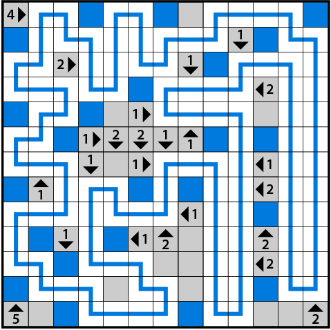

1. Yajilin - standard Yajilin rules
2. One Off Yajilin - standard rules, except that all clue numbers are either one too high or one too low

Each unlabeled yajilin puzzle follows the same rule set as one of the labeled puzzles. Which is which can be determined through logical elimination (for example, the fourth unlabeled grid cannot be the Full Lane Yajilin because the ninth column contains conflicting information about the number of blocks in that column). The matching yajilin types are indicated herein by matching colors.
Per the flavortext, paths from the pairs of puzzles with identical rule sets should be overlaid, and the resulting intersections indicated by the graphic with each puzzle counted. For example, the overlaid paths of the two Full Lane Yajilins form exactly 14 T-shaped intersections.
Alphanumerically these values spell the answer LONE.